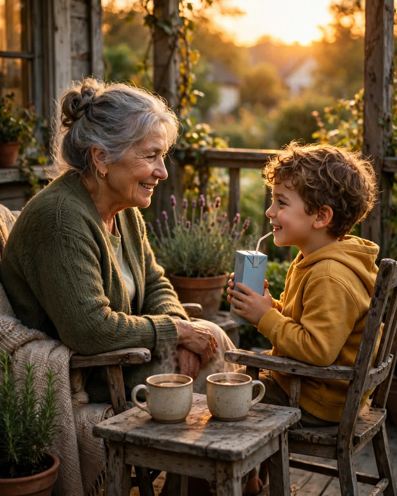

The Two Chairs
A Clipp Kaili original story

On my grandparents' porch there are two old chairs, angled toward each other, and for fifty years, that angle held their whole marriage.
Not side by side facing the road, like most porch chairs. Angled in, like two people mid-conversation — because they were. Every evening that weather allowed, and plenty it didn't, Grandpa Earl and Grandma Ruth took those chairs at seven with coffee that went to tea in the winter, and they talked.
It was the law of the house, so old that none of us remember it being made: whatever the day held — the store, the bills, the children, the silences that build up in any long marriage like weather — it got carried out to those two chairs and talked through before dark. Fights happened out there, quietly, and ended out there. Decisions were made out there. My father says he learned what his parents' marriage actually was by doing dishes at the kitchen window, listening to fifty years of evenings teach two people how to stay.
Grandpa used to say a couple doesn't need a bigger house. "You need two good chairs and the habit of sitting in them. Everything else a marriage needs can be carried out onto a porch."
When his health turned, he kept the chairs. Through the walker. Through the oxygen, the cord run out the screen door by my uncle, so Earl could keep his evening appointment. The last summer, some talks were short — ten minutes, and he'd be tired — but he sat. She sat. And the porch held its angle.
Grandpa died in November, at home, in his sleep, the way he would have ordered it if he'd been allowed.
Grandma kept the chairs.
She kept the hour, too. Every evening at seven, all winter, she made two cups out of habit and then one cup on purpose, and she took her chair, and she talked. To his chair. About the day, about the news, about the roof estimate, about nothing. Neighbors slowed down passing the house that winter and did not know whether what they were seeing was the saddest thing in the world or the strongest.
"It's not sad," she told me when I finally asked, careful as a grandchild can be. "Your grandfather listened to me for fifty years in that chair. My voice knows the way there. I'm not going to stop talking to him just because I have to do the listening for both of us now."
In the spring, my little cousin June — seven years old, blunt as a hammer — climbed up into Grandpa's chair at seven o'clock with a juice box and said, "Okay, Grandma. Tell me the day."
And Grandma laughed, and told her the day.
Now it is a rotation. June on Tuesdays. My brother when he's home from college. Me, whenever I visit — I sit in Earl's chair and mostly listen while my grandmother talks the evening through, and I understand, sitting in that angle, why the chairs face the way they do. Sitting there, you cannot help but turn toward her. Fifty years of that turning is not a habit.
It's a design for a life.
Grandma says she'll sit out there as long as she's given. Some evenings the second chair holds a grandchild. Some evenings it holds the quiet. Either way, at seven o'clock, the porch is full.
Because love that talks for fifty years doesn't stop when one chair empties.
It just starts teaching the next generation how to sit down and listen.
← Back to all stories